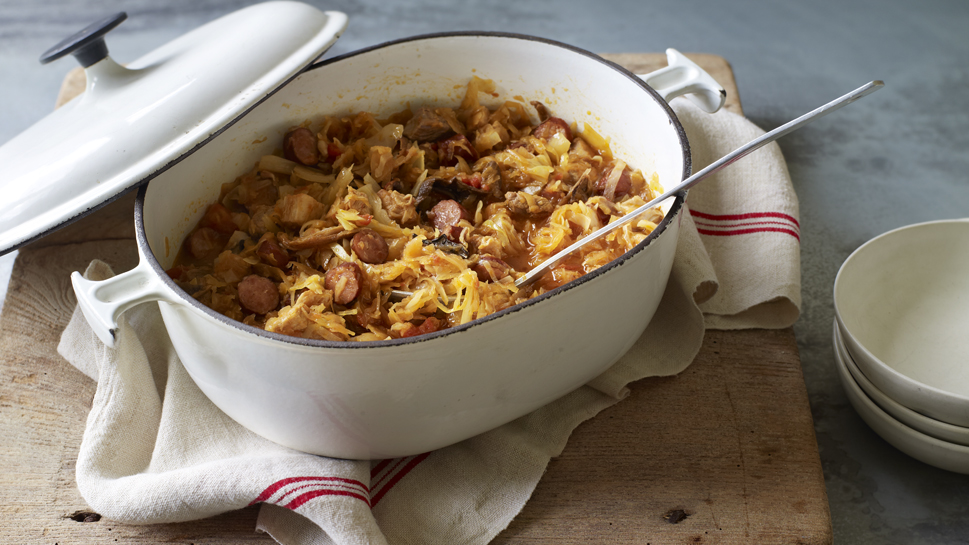

Bigos

Bigos is another Polish staple. A hearty stew full of protein rich meat that makes your mouth water just thinking about it.
Whatever it may be, a special occasion, Christmas, or just a normal day in the middle of the week, Bigos brightens your day.
Enjoyed with a few slices of sourdough bread, you can never go wrong with a bowl of bigos.
Ingredients
- 50g butter
- 1 onion, sliced
- 1 tsp juniper berries, crushed
- 1/2 tsp caraway seeds
- 300g lean pork belly, cubed
- 1 tbsp brown sugar
- 500g sauerkraut
- half a white cabbage, shredded
- 200g fresh chopped tomatoes or 400g tin tomatoes
- 500ml chicken orbeef stock
- 10g dried mushrooms
- 300g smoked Polish kielbasa, chopped
- 1 apple, grated
Steps
- Melt the butter in a large casserole. Add the onion and sauté over a medium heat until the onion is softened and translucent.
Sprinkle over the juniper berries and caraway, then add the pork. Sprinkle over the brown sugar.
Turn the heat up high for a couple of minutes, turning the meat so it browns well.
- Drain the sauerkraut well and give it a rinse if you want to reduce the vinegar flavour.
The easiest thing to do is squeeze it out with your hands. Add to the casserole with the white cabbage and chopped tomatoes,
then pour over the stock. Simmer for about 30 minutes.
- Soak the dried mushrooms in warm water. When they have softened, drain, adding their soaking liquor to the casserole.
Chop the mushrooms finely and add these to the casserole, along with the sausage and apple.
- Simmer for a further hour and a half and serve or cover overnight and reheat the following day.
Many recipes recommend making this stew 2 days in advance, cooking properly the first day, for a further hour the seocnd day,
and another hour before serving on the final day. It will still taste really good on the first day though!